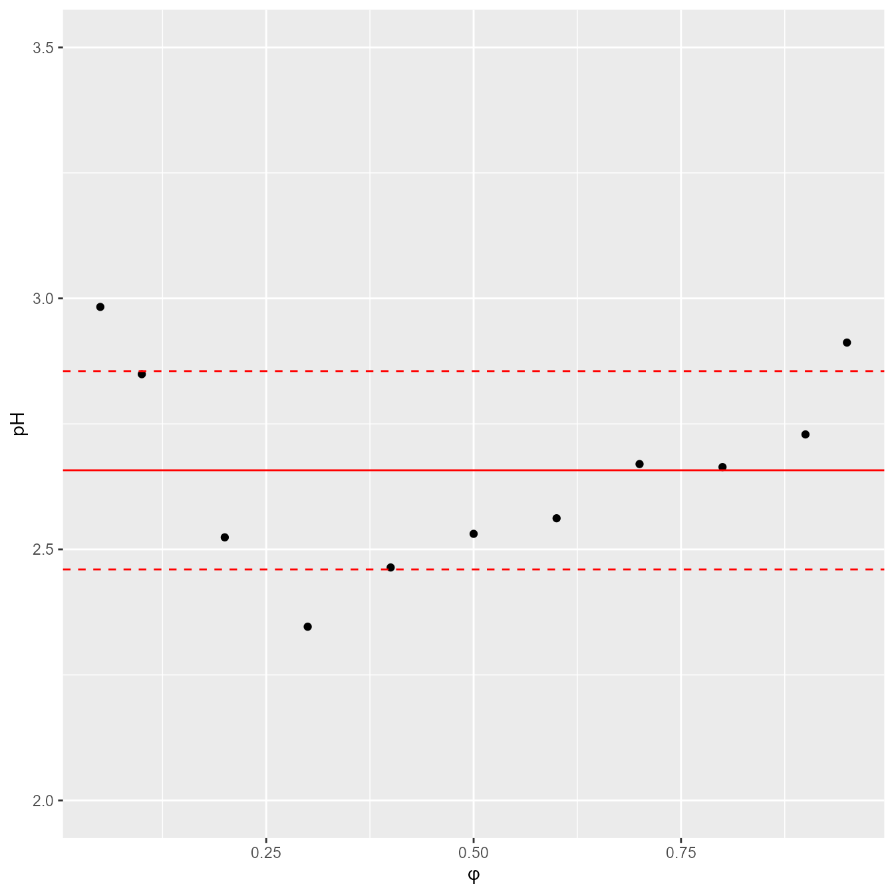

We used a publicly available dataset that comprises the measurements of RP-HPLC retention times collected for 1026 analytes. The retention times were measured under isocratic conditions on Eclipse Plus C18 (Agilent) stationary phase with 3.5 μm particles. The experiments were conducted using a mixture of two solvents: solvent A, which was made of 0.1% formic acid in water, and solvent B, which was made of 0.1% formic acid in acetonitrile. The column temperature was set at 35^{}C. The data were collected by Boswell et al. and were used to create a method to predict retention time by Back-Calculating the Gradient.
Code
#' R version needs to be higher to run Rxnsim (will fix later)#' Rxnsim packagesmiles <-read.csv("../data/smiles1026_kekulized.smi", sep ="\t", header =FALSE)simMat <-ms.compute.sim.matrix(smiles$V1)write.csv(simMat,'../data/similarity-matrix.csv')
Code
# load datadata <-read.csv("../data/database_logk_1026.csv", header =TRUE)analytes_names <-read.csv("../data/database_logk_1026_analyte_names.csv", header =TRUE)#' obtained using Rxnsim packagesimMat <-read.csv("../data/similarity-matrix-ltri.csv")%>%select(-X)rownames(simMat)<-colnames(simMat)makeSymm <-function(m) { m[upper.tri(m)] <-t(m)[upper.tri(m)]return(m)}simMat <-makeSymm(simMat)data<-data %>%left_join(analytes_names) %>%mutate(mm_group =case_when( MW_ACD <200~"MM < 200", MW_ACD <300& MW_ACD >=200~"200 \u2264 MM < 300", MW_ACD <400& MW_ACD >=300~"300 \u2264 MM < 400",.default ="400 \u2264 MM"))functional_groups =read.csv('../data/checkmol_functional_groups.csv')functional_groups_names =read.csv('../data/checkmol_functional_group_names.csv')# combine nr of caroboxylic acid and carboxyalic acid salt functional groups# heterocyclic compounds with more than 6 heterocycles are treated as if they have sixfunctional_groups[,76]=functional_groups[,76]+functional_groups[,77] functional_groups[which(functional_groups[,202]>5.5),202] =6; # exclude some functional groupsidx_excluded <-c(1, 2, 3, 6, 27, 28, 37, 47, 48, 51, 55, 61, 62, 67, 73, 74, 75, 77, 80, 91, 99, 109, 116, 117, 121, 125, 129, 142, 153, 154, 160, 161, 168, 173, 178, 181, 182, 186, 187, 191, 196, 201, 202)functional_groups_names <- functional_groups_names[-idx_excluded,]functional_groups <- functional_groups[,-idx_excluded]rm(idx_included)totalnrgroups <-summarise_each(functional_groups, funs(sum))# remove functional groups not present in the dataset:functional_groups <- functional_groups[,which(totalnrgroups!=0)]functional_groups_names<- functional_groups_names[which(totalnrgroups!=0),]totalnrgroups <-summarise_each(functional_groups, funs(sum))K <-ncol(functional_groups)data_ACD =read.csv('../data/ACD_pKas.csv')data_ACD$R =rowSums(data_ACD[,3:5]<14) # No of dissociation steps
Exploratory data analysis
During the exploratory data analysis phase, we create a series of plots to better understand our data.
The pH value of the mobile phase was verified experimentally for the purpose of this work. It equaled 2.66 with a standard deviation of 0.19 for the range of acetonitrile contents from 5 to 95%.
Code
data_pH <-read.csv("../data/pH.csv",header =TRUE)ggplot(data=data_pH, aes(x=fi, y=pH)) +labs(x ="\u03C6", y ="pH") +geom_point() +geom_hline(yintercept=mean(data_pH$pH), color ="red") +geom_hline(yintercept=mean(data_pH$pH)-sd(data_pH$pH), linetype="dashed", color ="red") +geom_hline(yintercept=mean(data_pH$pH)+sd(data_pH$pH), linetype="dashed", color ="red") +ylim(c(2.0,3.5))

The values of molecular mass MM were added to the dataset. They were calculated using ACD/Labs program based on the provided structures of analytes. The MM ranged from 73.09 to 656.8.
Code
df <- data %>%distinct(ID, .keep_all =TRUE) p1<-ggplot(data=df)+geom_histogram(aes(x=MW_ACD))+xlab("molecular mass")+ylab("count")p2<-ggplot(data=df)+geom_histogram(aes(x=logP_ACD))+xlab("logP")+ylab("count")p1+p2
The functional groups present in the analyzed chemical compounds are presented below, along with their frequencies
Multilevel modeling was performed in Stan software linked with R/ cmdstanr. For the inference we used 500 iterations, 1000 warmup iterations, and 8 Markov chains. The reduce_sum function was selected to accelerate the calculations. It works by parallelizing the execution of a single Stan chain across multiple cores. Convergence diagnostics were checked using Gelman−Rubin statistics and trace plots.
Initialize variables and parameters
Code
# create Stan data set:datastruct <-with(data,list(nAnalytes=length(unique(data$ID)),nObs=length(data$ID),analyte=match(data$ID, unique(data$ID)),fi=data$fi,logPobs=logPobs, start = start,end= end,pKaslit = pKaslit,charges = charges,K = K,fgrp = functional_groups,logkobs=logk,run_estimation=1))# initialize the values for each variable in each chain:init <-function(){list( logkwHat =rnorm(1,2,2),S1Hat =rnorm(1,5,1),dlogkwHat =rnorm(1,-1,0.125),dS1Hat =rnorm(1,0,0.5),S2Hat =2*exp(rnorm(1,0,0.125)),beta =rnorm(2,c(0.7,0.5),c(0.125,0.5)),omega =c(1,1)*exp(rnorm(2, 0, 0.5)),rho =matrix(c(1,0.75,0.75,1), nrow=2),#param = cbind(matrix(2, 1, nrow=nSteps), matrix(5, 1, nrow=nSteps)),param =cbind(init_aprox$logkw,init_aprox$S1),pilogkw =rep(0,K),piS1 =rep(0,K),sdpi =c(0.1,0.1)*exp(rnorm(2,0,0.1)),sigma =0.05*exp(rnorm(1, 0, 0.5)) )}
Individual parameter are the analyte-specific parameters estimated by the model. The following plots allow to assess the correlations between these parameters.
---title: "QSRR revisited. Hierarchical models"author: - name: "Paweł Wiczling*" affiliations: - name: "Department of Biopharmaceutics and Pharmacodynamics, Medical University of Gdańsk, Gen. J. Hallera 107, 80-416 Gdańsk, Poland"date: "`r format(Sys.Date())`"format: html: theme: cosmo toc: true code-fold: true code-tools: true fig-width: 7 fig-height: 7knitr: opts_chunk: dev: "ragg_png"---# SetupThe packages we will use are listed below.```{r setup, message=FALSE}library(cmdstanr)library(ggplot2)library(gridExtra)library(patchwork)library(rstan)library(tidyr)library(dplyr)library(posterior)library(bayesplot)library(GGally)library(reshape2)library(pracma)library(here)set.seed(123) knitr::opts_chunk$set(cache=TRUE, message=FALSE, error=FALSE, warning=FALSE, comment=NA, out.width='95%')``````{r paths}model_name <-"mod2"#' folder shortcuts:figures_dir <- here::here("deliv", "figures", model_name)tabels_dir <- here::here("deliv", "tables", model_name)model_dir <- here::here("model", "stan", model_name)stanfiles_dir <- here::here("model", "stan", model_name, "stanfiles")stan_dir <- here::here("model", "stan")if (!file.exists(figures_dir)) dir.create(figures_dir)if (!file.exists(tabels_dir)) dir.create(tabels_dir)if (!file.exists(model_dir)) dir.create(model_dir)if (!file.exists(stanfiles_dir)) dir.create(stanfiles_dir)```# DataWe used a publicly available [dataset](www.retentionprediction.org/hplc/database/) that comprises the measurements of RP-HPLC retention times collected for 1026 analytes. The retention times were measured under isocratic conditions on Eclipse Plus C18 (Agilent) stationary phase with 3.5 μm particles. The experiments were conducted using a mixture of two solvents: solvent A, which was made of 0.1% formic acid in water, and solvent B, which was made of 0.1% formic acid in acetonitrile. The column temperature was set at 35\^{\circ}C. The data were collected by Boswell et al. and were used to create a method to predict retention time by Back-Calculating the Gradient.```{r rxnsim-similarity, eval=FALSE}#' R version needs to be higher to run Rxnsim (will fix later)#' Rxnsim packagesmiles <-read.csv("../data/smiles1026_kekulized.smi", sep ="\t", header =FALSE)simMat <-ms.compute.sim.matrix(smiles$V1)write.csv(simMat,'../data/similarity-matrix.csv') ``````{r load-data, message=FALSE, warning=FALSE}# load datadata <-read.csv("../data/database_logk_1026.csv", header =TRUE)analytes_names <-read.csv("../data/database_logk_1026_analyte_names.csv", header =TRUE)#' obtained using Rxnsim packagesimMat <-read.csv("../data/similarity-matrix-ltri.csv")%>%select(-X)rownames(simMat)<-colnames(simMat)makeSymm <-function(m) { m[upper.tri(m)] <-t(m)[upper.tri(m)]return(m)}simMat <-makeSymm(simMat)data<-data %>%left_join(analytes_names) %>%mutate(mm_group =case_when( MW_ACD <200~"MM < 200", MW_ACD <300& MW_ACD >=200~"200 \u2264 MM < 300", MW_ACD <400& MW_ACD >=300~"300 \u2264 MM < 400",.default ="400 \u2264 MM"))functional_groups =read.csv('../data/checkmol_functional_groups.csv')functional_groups_names =read.csv('../data/checkmol_functional_group_names.csv')# combine nr of caroboxylic acid and carboxyalic acid salt functional groups# heterocyclic compounds with more than 6 heterocycles are treated as if they have sixfunctional_groups[,76]=functional_groups[,76]+functional_groups[,77] functional_groups[which(functional_groups[,202]>5.5),202] =6; # exclude some functional groupsidx_excluded <-c(1, 2, 3, 6, 27, 28, 37, 47, 48, 51, 55, 61, 62, 67, 73, 74, 75, 77, 80, 91, 99, 109, 116, 117, 121, 125, 129, 142, 153, 154, 160, 161, 168, 173, 178, 181, 182, 186, 187, 191, 196, 201, 202)functional_groups_names <- functional_groups_names[-idx_excluded,]functional_groups <- functional_groups[,-idx_excluded]rm(idx_included)totalnrgroups <-summarise_each(functional_groups, funs(sum))# remove functional groups not present in the dataset:functional_groups <- functional_groups[,which(totalnrgroups!=0)]functional_groups_names<- functional_groups_names[which(totalnrgroups!=0),]totalnrgroups <-summarise_each(functional_groups, funs(sum))K <-ncol(functional_groups)data_ACD =read.csv('../data/ACD_pKas.csv')data_ACD$R =rowSums(data_ACD[,3:5]<14) # No of dissociation steps```# Exploratory data analysisDuring the exploratory data analysis phase, we create a series of plots to better understand our data.```{r similarity-matrixplot}library(ggcorrplot)ggcorrplot((simMat[001:100,001:100]-0.5)*2)# ggcorrplot((simMat[101:200,101:200]-0.5)*2)# ggcorrplot((simMat[201:300,201:300]-0.5)*2)# ggcorrplot((simMat[301:400,301:400]-0.5)*2)# ggcorrplot((simMat[401:500,401:500]-0.5)*2)# ggcorrplot((simMat[501:600,501:600]-0.5)*2)# ggcorrplot((simMat[601:700,601:700]-0.5)*2)# ggcorrplot((simMat[701:800,701:800]-0.5)*2)# ggcorrplot((simMat[801:900,801:900]-0.5)*2)# ggcorrplot((simMat[901:1026,901:1026]-0.5)*2)x=which(simMat>0.95& simMat!=1, arr.ind =TRUE)pair_names =cbind(analytes_names$Analyte[unname(x[,1])],analytes_names$Analyte[unname(x[,2])])selected_compounds =unique(c(x))ggcorrplot((simMat[selected_compounds,selected_compounds]-0.5)*2)``````{r raw-data, message=FALSE, warning=FALSE}ggplot(data, aes(x=fi, y=logk, group=ID)) +geom_line(aes(color=logP_ACD)) +facet_wrap(~mm_group, ncol=2) +labs(x ="\u03C6", y =expression(log~k[obs])) +theme_gray(base_size =14) +theme(legend.position="none") ```The pH value of the mobile phase was verified experimentally for the purpose of this work. It equaled 2.66 with a standard deviation of 0.19 for the range of acetonitrile contents from 5 to 95%.```{r pH-plot, message=FALSE, warning=FALSE}data_pH <-read.csv("../data/pH.csv",header =TRUE)ggplot(data=data_pH, aes(x=fi, y=pH)) +labs(x ="\u03C6", y ="pH") +geom_point() +geom_hline(yintercept=mean(data_pH$pH), color ="red") +geom_hline(yintercept=mean(data_pH$pH)-sd(data_pH$pH), linetype="dashed", color ="red") +geom_hline(yintercept=mean(data_pH$pH)+sd(data_pH$pH), linetype="dashed", color ="red") +ylim(c(2.0,3.5))```The values of molecular mass MM were added to the dataset. They were calculated using [ACD/Labs program](www.acdlabs.com) based on the provided structures of analytes. The MM ranged from 73.09 to 656.8.```{r hist-MW-logP,message=FALSE, warning=FALSE}df <- data %>%distinct(ID, .keep_all =TRUE) p1<-ggplot(data=df)+geom_histogram(aes(x=MW_ACD))+xlab("molecular mass")+ylab("count")p2<-ggplot(data=df)+geom_histogram(aes(x=logP_ACD))+xlab("logP")+ylab("count")p1+p2```The functional groups present in the analyzed chemical compounds are presented below, along with their frequencies```{r functional-group-summary, message=FALSE, warning=FALSE}sumdata=data.frame(value=apply(functional_groups,2,sum))sumdata$key=functional_groups_names[,2]sumdata <- sumdata[order(sumdata$value),]sumdata$split <-rep(c(1,2),each=49)layout(c(1,2), widths=c(1,3))p1 <-ggplot(data=sumdata[which(sumdata$split==1),], aes(x=reorder(key, +value), y=value, fill=key)) +geom_bar(fill="gray", stat="identity") +theme(legend.position ="none",axis.title.x=element_blank(),axis.title.y=element_blank()) +coord_flip()+scale_y_continuous(breaks=c(0,5,10))p2 <-ggplot(data=sumdata[which(sumdata$split==2),], aes(x=reorder(key, +value), y=value, fill=key)) +geom_bar(fill="gray", stat="identity") +theme(legend.position ="none",axis.title.x=element_blank(),axis.title.y=element_blank()) +coord_flip() +scale_y_continuous(trans='log10',breaks=c(1,10,100,1000))# Combine the plots with a custom layoutp1 + p2 +plot_layout(design ="1222")```# Prepare data for calculations```{r}pKaslit = data_ACD[,3:5] # pKa values as predicted by ACDpKasliterror = data_ACD[,17:19] # pKa error as predicted by ACDchargesA =abs(data_ACD[,9:12]) # number of ionized groups (anions)chargesB =abs(data_ACD[,13:16]) # number of ionized groups (cations)charges = chargesA+chargesB # absolute chargegroupsA = (chargesA[,2:4]-chargesA[,1:3]) # acidic groupgroupsB =-(chargesB[,2:4]-chargesB[,1:3]) # basic groupR = data_ACD$R # number of dissociation stepsgroups = groupsB-groupsAlogPobs =df$logP_ACD logPobs[526] =mean(logPobs, na.rm =TRUE)# identify acidic groupsidxGroupsA <-which(groupsA!=0,arr.ind = T)nGroupsA <-nrow(idxGroupsA)pKaslitA<-pKaslit[idxGroupsA]# identify basic groupsidxGroupsB <-which(groupsB!=0,arr.ind = T)nGroupsB <-nrow(idxGroupsB)pKaslitB<-pKaslit[idxGroupsB]# groups dissociated in the whole pH rangechargesA0 <- chargesA[,1]chargesB0 <- chargesB[,max(R)]idxA0 =c(which(chargesA0==1), which(chargesA0==2))idxB0 =c(which(chargesB0==1), which(chargesB0==2))nA0 <-length(idxA0)nB0 <-length(idxB0)nObs <-length(data$ID)nAnalytes <-length(unique(data$ID))start <- (1:nObs)[!duplicated(data$ID)]end <-c(start[-1] -1, nObs)``````{r initial-estimates}initial_param <-matrix(NA,nAnalytes,3)for(i in1:nAnalytes){if(length(data$fi[data$ID==i])==1){ initial_param[i,2] <-polyfit(-16*data$fi[data$ID==i]/(1+2*data$fi[data$ID==i]), data$logk[data$ID==i],0) initial_param[i,1] <--16 }else{ initial_param[i,1:2] <-polyfit(data$fi[data$ID==i]/(1+2*data$fi[data$ID==i]), data$logk[data$ID==i],1) }}initial_param[,3] <-rep(2,nAnalytes)init_aprox <-data.frame(logkw = initial_param[,2])init_aprox$S2 <-rep(2,nAnalytes)init_aprox$S1 <--initial_param[,1]/(1+2)init_aprox$chargesB0 <-chargesB[,2]init_aprox$chargesA0 <-chargesA0``````{r initial-estimates-plot}init_aprox %>%ggplot(aes(x=logkw,y=S1,color=factor(chargesB0+chargesA0)))+geom_point()+labs(color="charges")```# Methods## ModelThe data was analyzed using a ...$$\begin{aligned}& logk = logk_w - S_1 \cdot (1 + S_2) \cdot \varphi / (1 + S_2 \cdot \varphi)\end{aligned}$$# StanMultilevel modeling was performed in [Stan software](https://mc-stan.org/) linked with R/ [cmdstanr](https://mc-stan.org/cmdstanr/). For the inference we used 500 iterations, 1000 warmup iterations, and 8 Markov chains. The reduce_sum function was selected to accelerate the calculations. It works by parallelizing the execution of a single Stan chain across multiple cores. Convergence diagnostics were checked using Gelman−Rubin statistics and trace plots.### Initialize variables and parameters```{r stansetup}# create Stan data set:datastruct <-with(data,list(nAnalytes=length(unique(data$ID)),nObs=length(data$ID),analyte=match(data$ID, unique(data$ID)),fi=data$fi,logPobs=logPobs, start = start,end= end,pKaslit = pKaslit,charges = charges,K = K,fgrp = functional_groups,logkobs=logk,run_estimation=1))# initialize the values for each variable in each chain:init <-function(){list( logkwHat =rnorm(1,2,2),S1Hat =rnorm(1,5,1),dlogkwHat =rnorm(1,-1,0.125),dS1Hat =rnorm(1,0,0.5),S2Hat =2*exp(rnorm(1,0,0.125)),beta =rnorm(2,c(0.7,0.5),c(0.125,0.5)),omega =c(1,1)*exp(rnorm(2, 0, 0.5)),rho =matrix(c(1,0.75,0.75,1), nrow=2),#param = cbind(matrix(2, 1, nrow=nSteps), matrix(5, 1, nrow=nSteps)),param =cbind(init_aprox$logkw,init_aprox$S1),pilogkw =rep(0,K),piS1 =rep(0,K),sdpi =c(0.1,0.1)*exp(rnorm(2,0,0.1)),sigma =0.05*exp(rnorm(1, 0, 0.5)) )}```### Fitting the modelWe compiled the model using cmdstanr:```{r stancompile, eval = FALSE}mod2 <-cmdstan_model(paste0(model_dir,".stan"), stanc_options =list("O1"))```We used optimization for initial testing:```{r stanoptimize, eval = FALSE}fit_opt <- mod2$optimize(data = datastruct,output_dir = stanfiles_dir,output_basename =paste0(model_name, "-opt"),init = init,iter=1000)fit_opt$print(max_rows=100)``````{r optplots, eval=FALSE}data$logkopt<-fit_opt$mle("logkx")data %>%filter(ID %in%c(20:30)) %>%ggplot(aes(x=fi, y=logk)) +geom_point() +geom_line(aes(x=fi, y=logkopt)) +facet_wrap(~ID) +labs(x ="\u03C6", y =expression(logk)) +theme_gray(base_size =14) +theme(legend.position="none")```For local computations one can use cmdstanr:```{r stansample, eval = FALSE} fit <- mod1$sample(data = datastruct,output_dir = stanfiles_dir,output_basename =paste0(model_name, "-loc"),init = init,iter_warmup =500,iter_sampling =250,chains =4,parallel_chains =4,refresh =100,adapt_delta=0.9 )fit$save_object(file =paste0(stanfiles_dir,"/mod1-loc.RDS")```We performed out computations at the Academic Computer Center in Gdańsk, [Tryton Cluster](https://docs.task.gda.pl/kdm/zasoby-sprzetowe/tryton/). In this case:1. we dumped the necessary data to .json format```{r dumpfiles, eval =FALSE}write_stan_json(datastruct, paste0(model_dir,"/standata.json"), always_decimal =FALSE)write_stan_json(init(), paste0(model_dir,"/init-1.json"), always_decimal =FALSE)write_stan_json(init(), paste0(model_dir,"/init-2.json"), always_decimal =FALSE)write_stan_json(init(), paste0(model_dir,"/init-3.json"), always_decimal =FALSE)write_stan_json(init(), paste0(model_dir,"/init-4.json"), always_decimal =FALSE)write_stan_json(init(), paste0(model_dir,"/init-5.json"), always_decimal =FALSE)write_stan_json(init(), paste0(model_dir,"/init-6.json"), always_decimal =FALSE)write_stan_json(init(), paste0(model_dir,"/init-7.json"), always_decimal =FALSE)write_stan_json(init(), paste0(model_dir,"/init-8.json"), always_decimal =FALSE)```2. we run the model using the batch file:```{=html}<pre></pre>```3. After calculations, we loaded the output files using cmdstanr. ```{r stanload}fit <- cmdstanr::as_cmdstan_fit(c(paste0(stanfiles_dir,"/", model_name, "-1.csv"),paste0(stanfiles_dir,"/", model_name, "-2.csv"),paste0(stanfiles_dir,"/", model_name, "-3.csv"),paste0(stanfiles_dir,"/", model_name, "-4.csv"),paste0(stanfiles_dir,"/", model_name, "-5.csv"),paste0(stanfiles_dir,"/", model_name, "-6.csv"),paste0(stanfiles_dir,"/", model_name, "-7.csv"),paste0(stanfiles_dir,"/", model_name, "-8.csv") ))```4. finally we checked the diagnostics of Monte Carlo inferences based on the Stan documentation described herein [diagnose](https://mc-stan.org/docs/cmdstan-guide/diagnose.html)```{r standiagnose, eval =FALSE}#fit$cmdstan_diagnose()setwd(stanfiles_dir)str =paste0(cmdstan_path(), '/bin/diagnose mod1_*.csv')system(str,intern=TRUE)```The diagnostics are reasonable given model complexity. Output copied here to save time:```{=html}<pre></pre>```## Summary of model parameters (table):The [stansummary](https://mc-stan.org/docs/cmdstan-guide/stansummary.html) function was used to report summary and diagnostic statistics over model parameters. ```{r summary}fit$print(max_rows =180)```# Genereted quantitites```{r generete-quntities, eval=FALSE}model_gen <-cmdstan_model(paste0(stan_dir, "/", model_name, "-gen.stan"))fit_gen <- model_gen$generate_quantities(fit,data = datastruct,seed =123,parallel_chains =4,output_dir = stanfiles_dir,output_basename =paste0(model_name, "-gen"))```# Results## Load```{r etaload}x <- cmdstanr::read_cmdstan_csv(c(paste0(stanfiles_dir,"/", model_name, "-gen-1.csv"),paste0(stanfiles_dir,"/", model_name, "-gen-2.csv"),paste0(stanfiles_dir,"/", model_name, "-gen-3.csv"),paste0(stanfiles_dir,"/", model_name, "-gen-4.csv") ))draws_gen_df <-as_draws_df(x$generated_quantities)```## Trace plotsTrace plots are time series plots of Markov chains. Here we show standard trace plots for several parameters```{r trace-plots, include=TRUE}bayesplot::mcmc_trace(fit$draws(c("logkwHat","S1Hat","dlogkwHat","dS1Hat","beta","S2Hat"))) bayesplot::mcmc_trace(fit$draws(c("omega","rho[1,2]","sigma"))) bayesplot::mcmc_trace(fit$draws(c("param[626,1]","param[626,2]"))) ```## Summary of model parameters (figures)```{r mcmc-intervals}mcmc_intervals(fit$draws(c("logkwHat","S1Hat","dlogkwHat","dS1Hat","beta","S2Hat")))mcmc_intervals(fit$draws(c("omega","rho[1,2]","sigma")))```## Fits```{r ind-pop-gof-plots}results_ind <-draws_gen_df %>%slice_sample(n=200) %>% tidybayes::spread_draws(slogk_ind[i]) %>%rename(ID=i) %>%group_by(ID)%>% tidybayes::median_qi(logkpred = slogk_ind) %>%select(-ID)results_pop <-draws_gen_df %>%slice_sample(n=200) %>% tidybayes::spread_draws(slogk_pop[i]) %>%rename(ID=i) %>%group_by(ID)%>% tidybayes::median_qi(logkpred = slogk_pop) %>%select(-ID)p1 = data%>%cbind(results_ind) %>%ggplot(aes(x=logkpred, y=logk)) +geom_point() +#geom_errorbar(aes(xmin = .lower, xmax = .upper), width=0.01)+geom_abline(intercept =0, slope =1) +labs(x ="logk (individual)", y ="logk (observed)") +theme_gray(base_size =14) +theme(legend.position="none")p2 = data%>%cbind(results_pop) %>%ggplot(aes(x=logkpred, y=logk)) +geom_point() +#geom_errorbar(aes(xmin = .lower, xmax = .upper), width=0.01)+geom_abline(intercept =0, slope =1) +labs(x ="logk (population)", y ="logk (observed)") +theme_gray(base_size =14) +theme(legend.position="none")p1+p2``````{r ind-predictions}analytes_idx =c(1:9, 501,510, 626)p <-draws_gen_df %>%slice_sample(n=1000) %>% tidybayes::spread_draws(sparam_ind[i,..], sS2Hat) %>%rename(ID=i) %>%left_join(analytes_names) %>%filter(ID %in% analytes_idx) %>% tidyr::expand_grid(fi =seq(0,1,0.1)) %>%mutate(logk = sparam_ind.1-sparam_ind.2*(1+sS2Hat)*fi/(1+sS2Hat*fi)) %>%ggplot(aes(x = fi, y = logk)) + ggdist::stat_lineribbon(.width =c(.90), alpha =1/2) +geom_point(data =filter(data,ID %in% analytes_idx),aes(x=fi, y=logk)) +facet_wrap(~Analyte)+labs(x="\u03C6", y="logk (individual)") +theme(legend.position ="none") +coord_cartesian(xlim=c(0,1),ylim=c(-1,2))print(p)``````{r pop-predictions}analytes_idx =c(1:9, 501,510, 626)p <-draws_gen_df %>%slice_sample(n=1000) %>% tidybayes::spread_draws(sparam_pop[i,..], sS2Hat) %>%rename(ID=i) %>%left_join(analytes_names) %>%filter(ID %in% analytes_idx) %>% tidyr::expand_grid(fi =seq(0,1,0.1)) %>%mutate(logk = sparam_pop.1-sparam_pop.2*(1+sS2Hat)*fi/(1+sS2Hat*fi)) %>%ggplot(aes(x = fi, y = logk)) + ggdist::stat_lineribbon(.width =c(.90), alpha =1/2) +geom_point(data =filter(data,ID %in% analytes_idx),aes(x=fi, y=logk)) +facet_wrap(~Analyte)+labs(x="\u03C6", y="logk (population)") +theme(legend.position ="none") +coord_cartesian(xlim=c(0,1),ylim=c(-1,2))print(p)```## Individual Parameters and etaplotsIndividual parameter are the analyte-specific parameters estimated by the model. The following plots allow to assess the correlations between these parameters.### Individual parameters```{r iparam-column-neutral}param <-apply(draws_gen_df[,which(colnames(draws_gen_df) %in%grep("^sparam_ind", names(draws_gen_df), value =TRUE))], MARGIN =2, FUN = mean)param <-melt(param)param1 <- param[1:nAnalytes,]param2 <- param[(nAnalytes+1):(2*nAnalytes),]data_to_plot_param <-cbind(param1,param2,logPobs)colnames(data_to_plot_param) <-c(expression('logkwN'[i]),expression('S1mN'[i]),expression('logP'[i]))p<-ggpairs(as.data.frame(data_to_plot_param), columnLabels =colnames(data_to_plot_param) ,labeller ="label_parsed",upper =list(continuous ="points"))print(p)```### Etas```{r ieta}param <-apply(draws_gen_df[,which(colnames(draws_gen_df) %in%grep("^seta_ind", names(draws_gen_df), value =TRUE))], MARGIN =2, FUN = mean)param <-melt(param)param1 <- param[1:nAnalytes,]param2 <- param[(nAnalytes+1):(2*nAnalytes),]data_to_plot_param <-cbind(param1,param2,logPobs)colnames(data_to_plot_param) <-c(expression('etalogkwN'[i]),expression('etaS1mN'[i]),expression('logP'[i]))p<-ggpairs(as.data.frame(data_to_plot_param), columnLabels =colnames(data_to_plot_param) ,labeller ="label_parsed",upper =list(continuous ="points"))print(p)```# Functional groups```{r functinoal-group-effects}#| fig-width: 6#| fig-height: 12draws_df_subset <- fit$draws(format ="df", variable =c("pilogkw","piS1"))param1<-draws_df_subset %>% tidybayes::spread_draws(pilogkw[No])%>% ggdist::median_qi(pilogkw) %>%mutate(param ="pilogkw") %>%rename(dv=pilogkw)%>%mutate(functional_groups_name = functional_groups_names$functional.group.name)param2<-draws_df_subset %>% tidybayes::spread_draws(piS1[No])%>% ggdist::median_qi(piS1) %>%mutate(param ="piS1")%>%rename(dv=piS1)%>%mutate(functional_groups_name = functional_groups_names$functional.group.name)param<-rbind(param1,param2) param %>%ggplot(aes(y = functional_groups_name, x = dv, xmin = .lower, xmax = .upper)) + tidybayes::geom_pointinterval() +labs(x="Effect", y="Functional group id")+facet_wrap(.~param)``````{r info}sessionInfo()```